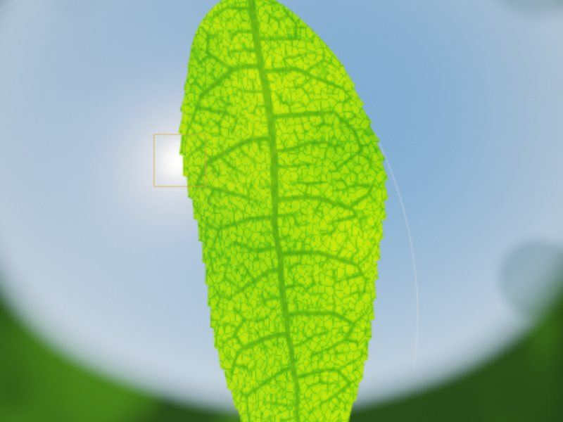
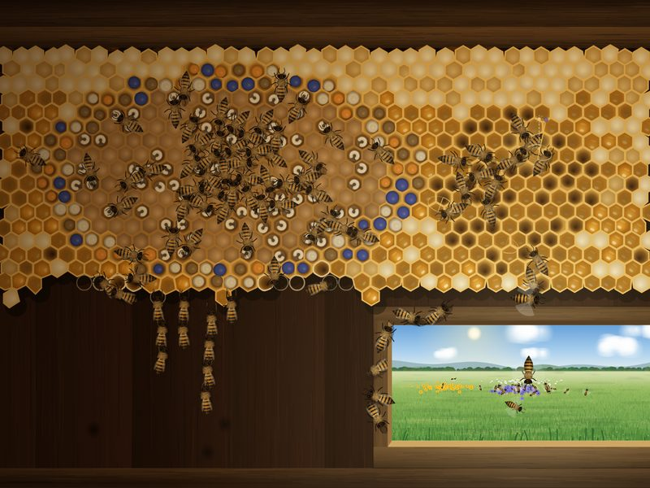
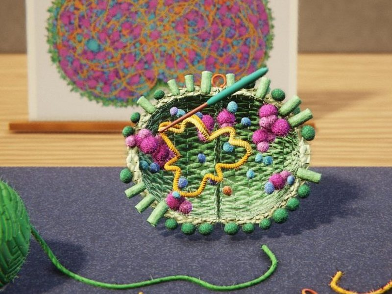
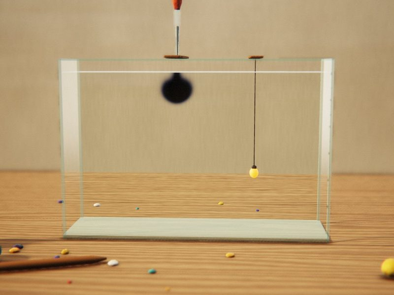
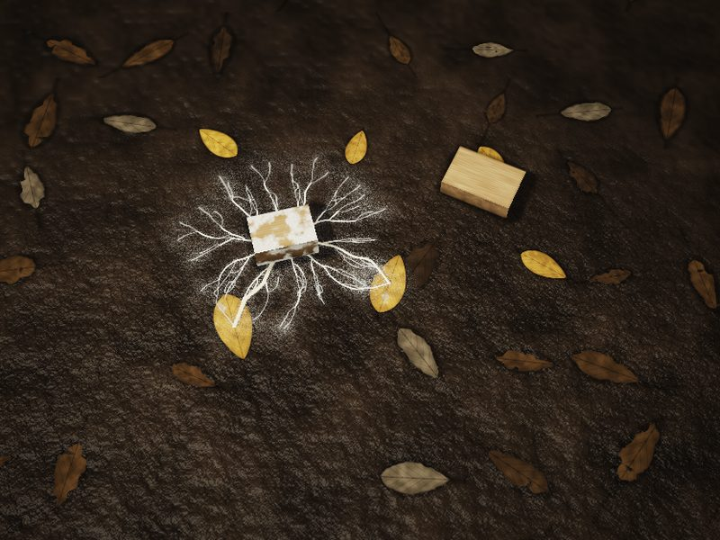

In preparation
Albion Rose
An international platform for teaching and learning at the frontiers of knowledge. Built with scientists and thinkers, checked by them, and open to schools.
The idea
Learning at the edges
What is now proved was once only imagin’d.William Blake
Nobody sees the whole. Each of us maps from where we start, so we need more voices, and ways to carry meaning across the boundaries between them. Learning is that carrying across: a translation, never a copy.
That matters more as artificial minds join the conversation. If people and machines are to grow up well together, the public has to be in the room, and able to follow. That is a job for teaching.
Albion Rose will hold frontier science and the cornerstones of modern knowledge, made to be handled. The pieces are not videos. Each is mathematics running in code, so it can be checked by people who know the field, corrected, and revised.
And a model is only a model. What is learned on a screen has still to be lived: with the hands, in classrooms, and outdoors.
The plan · one minute
How it will work
Nobody sees the whole. Each of us lights one part.
- A public museumEvery field has a lab, and the labs open on to one museum: catalogued, free to explore, and made to be handled.
- Learning as translationNothing is handed over whole. Passages join the fields, and each idea is made again in the terms of the next.
- Simulations, not videosEach piece is mathematics running in code. It is checked by people who know the field, and revised when they say so.
- Learned, then livedA model is only a model. The hands, the classroom and the weather come first, and the screen serves them.
- A place to be seenFree to schools. For people working at the frontiers and between fields, a way to be found by the public, and by funders and philanthropists.
Made to be handled
Six you can try now

A Leaf in the SunIt draws its own veins, then lives by the light.
The HiveA hundred and twenty bees, one comb, and a meadow that keeps changing.
The smallest cell, in woolKnitted stitch by stitch until it is ready to divide.
Living inkInk in water spreads. What would it take for a drop to hold together?
Threads under the LeavesA fungus looking for wood. Put a piece down, or cut a cord. The MurmurationEach starling watches its seven nearest neighbours, and nobody leads.
The MurmurationEach starling watches its seven nearest neighbours, and nobody leads.
Each opens live at temporalgrammar.ai, where the first pieces are kept.
Who it is for
Schools
Free resources for classrooms, with fuller sets for member schools. Built by teachers, for pupils to handle and not only to read.
Universities and researchers
A way to show research to a wider public and to those who fund it, and a community for people working where one field meets another.
Everyone else
Open museums of ideas, and a seat in the conversation about where knowledge is going.
Scientists and thinkers from around the world are being invited, a few at a time. Their names will appear here as they join.
A first film · 7 minutes
Held
A film in clay about who was held, what is handed on, and why a circle of different people sees further than a circle of the same. It is the argument for this whole place, in seven minutes. It is also the reminder we keep: models are only models, and the real world is what holds us.
The name
Albion is everyone
The most sublime act is to set another before you.William Blake
For William Blake, Albion is not a country. He is all of us: a sleeper who wakes.
In the print called Albion Rose, a figure who has been labouring in the dark has risen. He stands in the light with his arms open. He is not taking anything. He is giving himself away.
That is the gesture this place is named for. Open hands, no flag, and room for everyone who comes: on the globe, each person has the same small light.
Who
Founded by Alexander Sabine, with the first few people already on board.
The way it will be built can be seen now at temporalgrammar.ai: films in clay, a walk-through museum, and simulations made to be handled.
If you are a scientist, a teacher or a school and would like to be part of it, write.